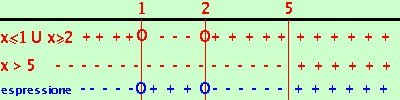

Disequazione fratta minore od uguale a zero
risolviamo la disequazione:
x2 -3x + 2
-----------------
x - 5 |
 0 0 |
Quando abbiamo una frazione dobbiamo sempre tener presente il fatto che il denominatore deve sempre essere diverso da zero, quindi per risolvere la mia disequazione pongo sempre
- il numeratore
 0 0
- il demoninatore solamente > 0
- faccio lo schema dei segni e prendo i valori concordi, cioe' dove la frazione risulta maggiore od uguale a zero
Pongo numeratore maggiore od uguale a zero e denominatore solamente maggiore di zero
 x2 -3x + 2
x2 -3x + 2 0 0
x - 5 > 0
-
la prima
x2 -3x + 2 0 e' verificata per
x
 1 U x 2
Calcoli 1 U x 2
Calcoli
- la seconda
x - 5 > 0 e' verificata per
x > 5
quindi il mio sistema e' equivalente al sistema
x 1 U x 2
x > 5

Riporto su un grafico, evidenziando con un piu' dove il fattore e' positivo e con un meno dove e' negativo. Dove il valore che annulla e' accettabile lo segno con un cerchietto
Nella riga in blu metto il segno dell'espressione quoziente
Ora faccio i calcolo dei segni: siccome devo prendere dove l'espressione e' negativa o nulla l'espressione quoziente sara' negativa dove-
il numeratore e'positivo o nullo ed il denominatore e' negativo (meno di 1 e tra 2 e 5)
- il numeratore e' negativo o nullo ed il denominatore e' positivo (da nessuna parte)
La soluzione e'
x 1 U 2 x < 5
|